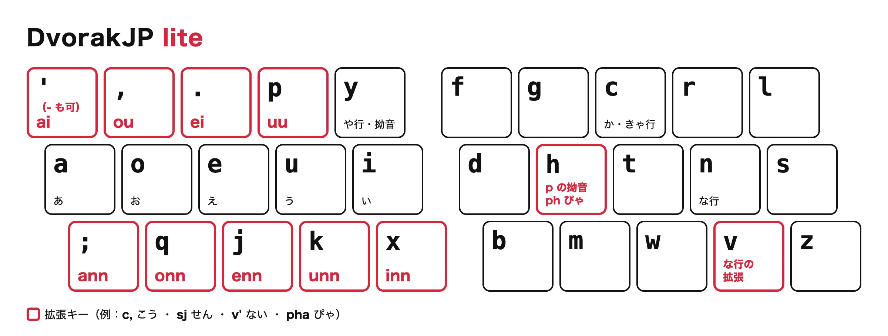
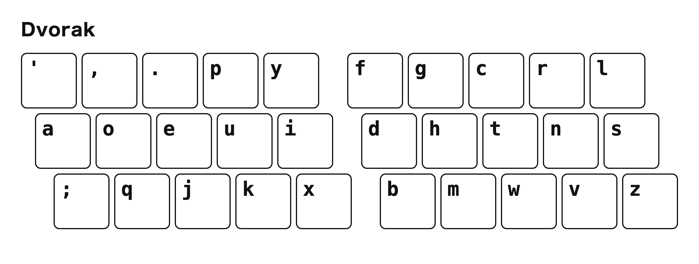
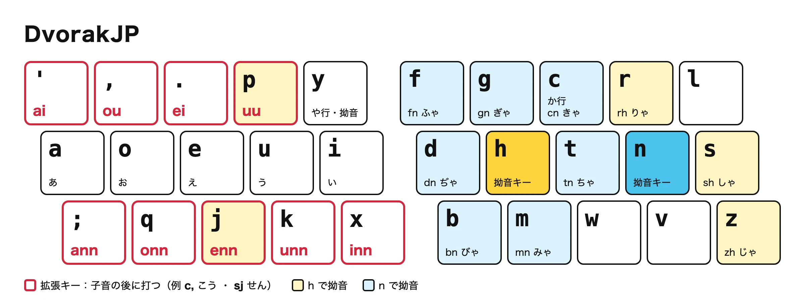

DvorakJP lite とは
DvorakJP の拡張ローマ字入力を、普通のローマ字入力を妨げないように見直し、「ん」の後も余計な打鍵なしで打てるようにしたローマ字テーブルです。
たとえば「鉛筆（えんぴつ）」は、DvorakJP では ennpitu と n を 2 回打つ必要がありますが、DvorakJP lite では enpitu と 1 打少なく打てます。DvorakJP の二重母音や「ん」の拡張の仕組みは引き継ぎ（な行の拡張は v に移しています）、QWERTY で身に付けたローマ字入力の規則もそのまま使えるので、今までの打ち方を覚え直す必要もありません。

設計思想
1. 「ん」の後でも最小の打鍵数で打てるようにする
DvorakJP では、n の後の拡張キーが「な行の拡張」になります（nj ねん、n. ねい、np ぬう）。また、nh は「にゃ行」の拗音です。そのため、母音の直後の「ん」に、これらのキーで始まる音が続くときは、n を 2 回打って「ん」を確定させる必要がありました。
DvorakJP lite では、な行の拡張を v に移し、n の拗音の拡張も使わないことで、この衝突をなくしました。そのため、DvorakJP では余計な打鍵が必要だった「ん」の後の入力も、通常のローマ字入力と同じ打鍵数で入力できます。
| 単語 | DvorakJP | DvorakJP lite |
|---|---|---|
| 鉛筆（えんぴつ） | ennpitu（7 打。enpitu だと「えぬういつ」） | enpitu（6 打） |
| 温情（おんじょう） | onnj,（5 打。onj, だと「おねん、」） | onj,（4 打） |
| 隠蔽（いんぺい） | innp.（5 打。inp. だと「いぬう。」） | inp.（4 打） |
| 全員は（ぜんいんは） | zjinnha（7 打。zjinha だと「ぜんいにゃ」） | zjinha（6 打） |
そのうえで、拡張ルールを次の方針で見直しています。
- 打鍵数を減らす拡張は、普通のローマ字で使わない組み合わせに移して残す。
- な行の拡張は
nの代わりに、Dvorak 配列でnの真下にあるvで打つ（vjねん、v,のう） - ぴゃ行は、Dvorak 配列で
pとyがどちらも左手の上段にあり、pyaが同じ手の連続打鍵になって打ちにくい。そこで、hを使う拗音拡張のうち、右手のhを使って左右交互に打てるphだけを採用する（phaぴゃ、ph,ぴょう）。phは普通のローマ字では使わない組み合わせなので、衝突しない
- な行の拡張は
- 打鍵数を減らさない拡張は、原則として採用しない。
- ぴゃ行以外の
h、nの拗音拡張は採用しない。この拡張は、yの代わりに使っても打鍵数は減らない（cnaもcyaも 3 打）が、拗音の子音とh・nを右手で続けて打てる（アルペジオ打鍵）という DvorakJP の工夫である。DvorakJP lite では、この利点よりも、普通のローマ字との互換性と覚えるルールの少なさを優先し、主要な拗音は QWERTY 同様「子音（右手）、y＋母音（左手）」で打つ。
- ぴゃ行以外の
2. QWERTY で身に付けたローマ字入力の規則をそのまま使える
拡張ルールを普通のローマ字で使わない組み合わせに限ったので、DvorakJP の拡張と共存しながら、かなを打つ一般的なローマ字のつづりはすべてそのまま使えます（z. … などの一部の記号入力は、拡張入力に使うため除きます）。
たとえば、「ん」を n 1 回で入力する（kanji → 漢字）といった、QWERTY で身に付けたローマ字入力の規則を覚え直す必要はありません。拡張入力を覚えなくても今までどおり入力でき、必要に応じて少しずつ拡張入力を取り入れられます。
3. 記号キーの自由度を担保する
「ア段＋い」は ' と - のどちらでも打てます（k' / k- → かい）。Dvorak 配列の上段左の記号キーは、好みで ' と - のどちらにしていても使えます。
DvorakJP との主な違い
| 項目 | DvorakJP | DvorakJP lite |
|---|---|---|
| 「ん」の後の入力 | 一部の組み合わせで nn が必要（ennpitu 鉛筆） | 拡張ルールとの衝突による nn は不要（enpitu 鉛筆） |
| な行拡張 | n（n' ない、nj ねん） | v（v' ない、vj ねん） |
| 拗音拡張 | h と n | 原則 y。ぴゃ行のみ h による拡張も使える |
| ア段＋い | ' | ' と -（Dvorak 版） |
| 記号入力 | z（z. …） | 主に ;（;. …）。z. などは拡張入力（z. ぜい） |
DvorakJP lite の拡張キー
拡張キーは、子音や拗音のすぐ後に打って、二重母音や「ん」までをまとめて入力するキーです。たとえば「ア段＋い」の ' を s の後に打つと、s' で「さい」になります。
| キー | 意味 | 直音の例 | な行 | 拗音の例（きゃ行・ぴゃ行） |
|---|---|---|---|---|
' - | ア段＋い（ai） | s' s- さい | v' v- ない | cy' cy- きゃい、ph' ph- ぴゃい |
, | オ段＋う（ou） | s, そう | v, のう | cy, きょう、ph, ぴょう |
. | エ段＋い（ei） | s. せい | v. ねい | cy. きぇい、ph. ぴぇい |
p | ウ段＋う（uu） | sp すう | vp ぬう | cyp きゅう、php ぴゅう |
; | ア段＋ん（ann） | s; さん | v; なん | cy; きゃん、ph; ぴゃん |
q | オ段＋ん（onn） | sq そん | vq のん | cyq きょん、phq ぴょん |
j | エ段＋ん（enn） | sj せん | vj ねん | cyj きぇん、phj ぴぇん |
k | ウ段＋ん（unn） | sk すん | vk ぬん | cyk きゅん、phk ぴゅん |
x | イ段＋ん（inn） | sx しん | vx にん | cyx きぃん、phx ぴぃん |
詳しい仕様は GitHub の README を見てください。
導入方法
お使いの OS とキーボード配列を選んで、下の導入手順に進んでください。
キー配列が QWERTY(JIS) の方向け。日本語入力は DvorakJP lite、英字直接入力は QWERTY(JIS) で入力できます。
キー配列が QWERTY(US) の方向け。日本語入力は DvorakJP lite、英字直接入力は QWERTY(US) で入力できます。
キー配列が Dvorak 配列の方向け。
ローマ字テーブルをダウンロード
romantable_dvorakjplite_qwerty_jis.txt
Google日本語入力のローマ字テーブルをインポートする
- メニューバーの入力メニューから、Google日本語入力の「環境設定…」を開きます。
- 「一般」タブの「ローマ字テーブル」で「編集…」を押します。
- 左下の「編集」→「インポート…」で、ダウンロードした
romantable_dvorakjplite_qwerty_jis.txtを選びます。 - 「OK」→「適用」で保存します。
- 同じ画面の「入力補助」タブの「自動変換」で、句読点（、。）での自動変換をオフにします（「読点」と「句点」のチェックを外すか、自動変換そのものをオフにします）。
理由：QWERTY 版では , と . を子音のキー（Dvorak 配列の w と v）として使います。自動変換がオンのままだと、, や . を打った時点でそれまでの文字が変換されてしまい、たとえば kqcr,s が「体重を」ではなく「体重、お」になります。
Google日本語入力のローマ字テーブルをインポートする
- タスクバーの入力モードのアイコン（「あ」や「A」）を右クリックし、「プロパティ」を開きます。
- 「一般」タブの「ローマ字テーブル」で「編集…」を押します。
- 左下の「編集」→「インポート…」で、ダウンロードした
romantable_dvorakjplite_qwerty_jis.txtを選びます。 - 「OK」→「適用」で保存します。
- 同じ画面の「入力補助」タブの「自動変換」で、句読点（、。）での自動変換をオフにします（「読点」と「句点」のチェックを外すか、自動変換そのものをオフにします）。
理由：QWERTY 版では , と . を子音のキー（Dvorak 配列の w と v）として使います。自動変換がオンのままだと、, や . を打った時点でそれまでの文字が変換されてしまい、たとえば kqcr,s が「体重を」ではなく「体重、お」になります。
Linux 版の Google日本語入力はないので、オープンソースの日本語入力システム Mozc（fcitx5-mozc など）を使います。ローマ字テーブルの形式は同じです。
Mozc のローマ字テーブルをインポートする
- Mozc の設定ツールを開きます。
ディストリビューションによっては/usr/lib/mozc/mozc_tool --mode=config_dialog/usr/libexec/mozc/mozc_toolにあります。 - 「一般」タブの「ローマ字テーブル」で「編集…」を押します。
- 左下の「編集」→「インポート…」で、ダウンロードした
romantable_dvorakjplite_qwerty_jis.txtを選びます。 - 「OK」→「適用」で保存します。
- 同じ画面の「入力補助」タブの「自動変換」で、句読点（、。）での自動変換をオフにします（「読点」と「句点」のチェックを外すか、自動変換そのものをオフにします）。
理由：QWERTY 版では , と . を子音のキー（Dvorak 配列の w と v）として使います。自動変換がオンのままだと、, や . を打った時点でそれまでの文字が変換されてしまい、たとえば kqcr,s が「体重を」ではなく「体重、お」になります。
練習
日本語入力をオフにして、英字の直接入力で打つ長文タイピング練習です。
練習のしかた
- 下段の赤字の部分は、拡張入力で打鍵を減らせます（マウスを乗せると打ち方が出ます）。
- かなに確定する前の入力中のキーは、Backspace で消して打ち直せます。
- キーボード配列は、導入方法で選んだものと同じにしてください。
- QWERTY(JIS)・QWERTY(US) では、OS の配列は QWERTY のまま、Dvorak 配列と同じ位置のキーで打ちます。
- 下段のローマ字は、どの配列でも Dvorak 配列の文字で表示します。
読み込み中…
DvorakJP の解説
Dvorak 配列について
Dvorak 配列は、アメリカのワシントン大学の教育学教授で教育心理学者の August Dvorak（と義弟の William Dealey）が考案したキー配列です（1932 年に完成し、1936 年に米国で特許を取得）。
QWERTY 配列は 1874 年に発売されたタイプライターが普及したことで、業界標準として定着した配列です。これに対して Dvorak 配列は、英文の文字の出現頻度と手のしくみを調べて設計された配列であり、以下の特徴を持ちます。

- ホーム段によく使う文字を集める。 左手に母音（
aoeui）、右手によく使う子音（dhtns）を置き、英文の文字の打鍵の約 70% をホーム段で打てます（QWERTY では 32%）。 - 左右の手を交互に使う。 母音と子音を左右の手に分けることで、同じ手が続く打鍵を減らします。
- 指の移動を減らす。 英文入力での指の動きは QWERTY の約 63% になるとされます。
- 右手を多く使う。 右利きの人が多いため、右手で打つ割合を多くしています。
1982 年には ANSI（米国規格協会）が承認し、代替のキー配列の正式な規格（ANSI X4.22-1983）になりました。現在は Windows・macOS・Linux など主な OS に標準で入っています。
Dvorak 配列は QWERTY 配列を打ちやすさの面から見直した先駆けであり、その後の Colemak 配列など多くの新しい配列にも影響を与えました。
Dvorak 配列は英語のために設計された配列であるため、日本語のローマ字入力に使うと、打ちにくい点がいくつかあります。そこで、日本語のローマ字入力でも Dvorak 配列の利点を生かせるように拡張したのが、次に説明する DvorakJP です。
DvorakJP とは
Dvorak 配列で日本語を打ちやすくするために、ローマ字入力を拡張したローマ字テーブルです。キーの物理配置は Dvorak 配列のまま、打鍵の数と左右の手の偏りを減らします。
DvorakJP は Aki:z 氏が考案し、2002 年 3 月に β 版、2003 年 12 月に正式版 v1.0 が公開されました。か行を c、拗音を h と n で打てるようにしたほか、SKY と AZIK を参考に、二重母音と「ん」を 1 打で打つ拡張を取り入れています。

このページの図と表には、v0.2β にあった p の「uu」（ウ段＋う）も含めています。v1.0 では、pp で「っ」を打てるようにするために削除されました。
設計思想
1. 母音は左手、子音は右手で打つ
Dvorak 配列は左手のホーム段に母音（a o e u i）が並び、子音の多くは右手にあります。そのため、ローマ字の「子音＋母音」のほとんどが左右交互の打鍵になり、Dvorak 配列はそのままでも日本語を打ちやすいという大きな利点を持っています。
2. 左手側に配置された子音を右手で打てるようにする
ただし、か行の k と拗音の y は左手にあり、左右交互が崩れます。DvorakJP では右手のキーで代わりに打てるようにします。
- か行は
cでも打てる。 例:caか、ciき、coこ - 拗音は
yの代わりにhかnで打てる。 例:rhaりゃ、cnaきゃ
3. よく出る母音の組み合わせと「ん」を1打にする
「こう」「かい」「せん」のような二重母音や撥音（ん）は、日本語にとても多く出てきます。左手の母音のまわりにある、ローマ字では使わないキー（' , . p ; q j k x）に割り当て、子音の後に1打で打てるようにします。例: c,c' こうかい（公開）、t,cn, とうきょう（東京）
DvorakJP の拡張キー
| キー | 意味 | 直音の例 | な行 | 拗音の例 |
|---|---|---|---|---|
' | ア段＋い（ai） | s' さい | n' ない | rh' りゃい |
, | オ段＋う（ou） | s, そう | n, のう | rh, りょう |
. | エ段＋い（ei） | s. せい | n. ねい | hn. ひぇい |
p | ウ段＋う（uu） | sp すう | np ぬう | rhp りゅう |
; | ア段＋ん（ann） | s; さん | n; なん | cn; きゃん |
q | オ段＋ん（onn） | sq そん | nq のん | rhq りょん |
j | エ段＋ん（enn） | sj せん | nj ねん | mnj みぇん |
k | ウ段＋ん（unn） | sk すん | nk ぬん | cnk きゅん |
x | イ段＋ん（inn） | sx しん | nx にん | bnx びぃん |
拗音に h と n のどちらを使うかは、子音で決まります（y もそのまま使えます）。
| 拗音キー | 子音と例 |
|---|---|
h | sha しゃ、jha じゃ、zha じゃ、nha にゃ、rha りゃ、pha ぴゃ |
n | cna きゃ、gna ぎゃ、tna ちゃ、dna ぢゃ、hna ひゃ、fna ふゃ、bna びゃ、mna みゃ |
参考資料
- Dvorak keyboard layout（英語版 Wikipedia）
- 本家サイト:
http://www7.plala.or.jp/dvorakjp/index.htm（Aki:z氏）
2021 年 11 月〜2023 年 2 月の間に閉鎖。Internet Archive で閲覧可能（2026 年 11 月現在） - AI全盛期の今だからこそ、改めてオススメしたいDvorak, DvorakJP配列（Zenn, shinespark氏）
- dvorakjp-roman-table（DvorakJP Prime）（GitHub, shinespark氏）